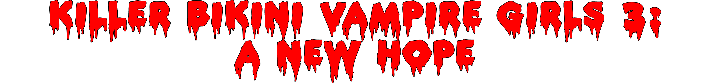
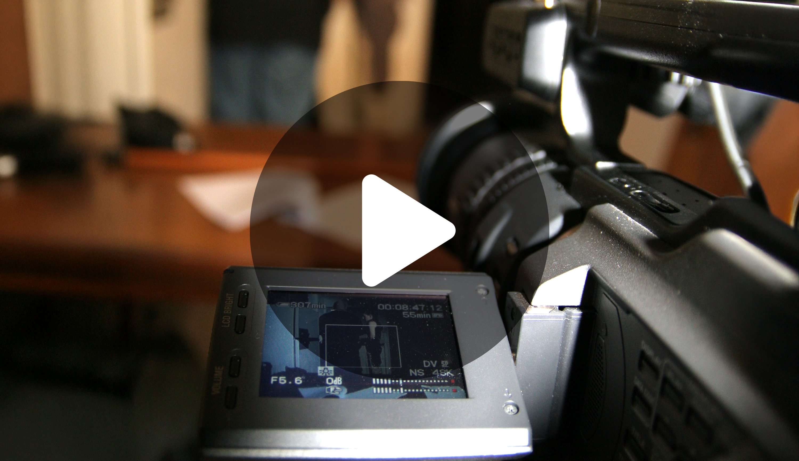

Official Movie Series Archive
Films
Lore
Gallery
Chapter III

A group of summer camp councilors at Camp Hackenslash are systematically being slaughted by a pair of Killer Bikini Vampire Girls. Will any of them be left alive?
Watch behind the scenes:
Killer Bikini Vampire Girls Exposed

CREDITS
Quinn
Scott Congdon
Raevan
Olivia Darby
Danny
Jonathon Fitch
Robia
Kerri-Anne Huvud
Adam
Steve Lwyd
Kali
Melissa Merchant
Sarah
Bree O'Hehir
Alyssa
Eileen Payne
Tom
Sam Shales
Mercedes
Kim Renae Silverstone
Iyari
Miley Tunnecliffe
Special Appearances by
Nicquel Barkla
Ruth Cheah
Tiffany Elt
Michelle Parkin
Joanne Randazzo
Katharine von Puttkammer
and
Renae Geddes as Charisma
Screenplay
John Silvestro
Director
Jason R.L. Jones
Producer
John Silvestro
Director of Photography
Stewart Hadfield
Camera Assistant
Chris Morris
Production Designer
Kate Separovich
Editor
Paul Black
1st Assistant Director
Jacki Collis
Location Assistant
Ashley Barron
Boom Swingers
Jake Dawson
Chris Morris
Jeremy Stewart
Ian Strang
Grips & Gaffers
Jake Dawson
Jeremy Stewart
Ian Strang
Props & Set Dressing
Kate Separovich
Stills Photographer
Scott Congdon
Driver
John Silvestro
Armourer
Paul Laneaux
Special Effects
John Silvestro
ADR Recordist
Paul Black
Post-Production Digital Painter
Chris Morris
Sound Editor
Paul Black
Songs
"Sonamulate", "Desolate"
& "Signed My Life Away"
Written and performed by Sonamulate
"Path Vol. 2"
Written & Performed by Apocalyptica
Special Thanks
Gage Roads Brewing Co.
Kennards Equipment Hire
St Hilda's Anglican Church
Lily Martin
City of Stirling
City of Joondalup